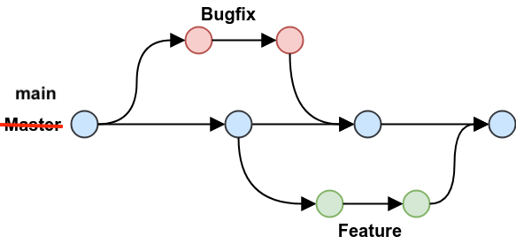
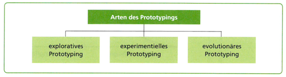

1. 2025-09-16
-
Memory Types: Stack/Heap
-
Value Type/Reference Type
-
Call by Value/Call by Reference
-
Distributed vs centralized version control
2. 2025-09-23
Testtermine:
-
2025-11-25 2025-12-02: 1. Test
-
2026-01-13: 2. Test
-
2026-04-21: 3. Test
-
2026-06-09: 4. Test
2.2. Einführung git
Fragen:
-
Was ist ein VCS?
-
Welche Probleme lösen VCS?
-
Unterschiede zwischen git und VCS wie zB SVN? (verteiltes vs zentrales VCS)
-
git - clients
-
git - workflow
Antwort

-
Unterschied zwischen git und GitHub/gitlab/bitbucket/…?
-
Wie erstellt man ein lokales Repository?
-
Was ist ein Repository?
-
Unterschied zwischem
rmundgit rm? -
Was ist der Unterschied zwischen
git commitundgit push?


5. 2025-10-xx

5.1. Branching
5.1.1. Types of Branches
-
Feature Branch
-
Bugfix Branch
-
Hotfix Branch (wie Bugfix nur dringender)
-
Main Branch (Release Branch)
Main Branch wurde früher Master Branch genannt
-
Develop Branch
5.1.2. Branching-Strategies
No-Flow

GitHub Flow
-
Vereinfachte Braching-Strategie: GitHub Flow (FH-Bielefeld)
Figure 3. GitHub-Flow in Programster’s Blog-
Fazit:
-
-
Git-Flow Workflow: Es gibt 2 Haupt-Branches (main, develop) und mehrere Neben-Branches (feature, release, hotfix)
-
GitHub Flow: Es gibt nur einen Haupt-Branch (main) und mehrere Neben-Branches (feature, hotfix)
6. 2025-11-05
6.1. Forks and Pull Requests
In case somebody wants to contribute to a repo (owned by another person or organization) a fork of the original repo has to be done. The contributor can now change the forked repo without any limitations. When the contributor to get their changes back into the original repo they do a pull request, i.e., the contributor asks the owner to merge the changes back to the original repo.
A fork of a repo can be seen as a smart copy of the original repository. Smart in this sense that the fork has a "backlink" to the original repo and is aware if the original has changed. As a contributor be aware if you ask for a pull request to have your fork synchronized with the original before creating a merge request.
6.2. Exercises
Work in pairs (called Student A and student B in the sequel) and accomplish the following tasks.
6.2.1. Simple Pull Request
-
A creates a repository with one text file
Readme.md. -
B forks it and clones it
-
B makes some changes to
Readme.mdcommits them and pushes them -
B creates a pull request to A to get the changes back to the original
Play around with the GitHub UI to get used to it. Reflect the different directions when to compare the pulled changes. Look closely on the arrows in the UI.
6.2.2. Sync A Given Fork
-
A does some changes to
Readme.md`commits and pushes -
B reloads their fork to get the info that the original has changed
-
B syncs the changes
Again try the different scenarios GitHub offers (direct syncing, comparing) and get acquainted to the UI and functionality.
6.2.3. Create a Pull Request from a Non-Synced Fork
-
A changes their repo and B reloads but does not sync!
-
B changes their repo (same file and line as A) and creates a pull request
See what happens. How to deal with merge conflicts? How to avoid these?
6.2.4. Pull Requests from a Non-Synced Fork But Using a Branch
-
A changes their repo and B reloads but does not sync!
-
B creates a new branch, changes the same file and line as A and creates a pull request
Look again what’s happening? Prepare for a discussion next week about how to deal best with pull requests and especially which discipline to establish to avoid pain.
8. 2025-11-19
8.1. Merging vs. Rebasing
8.1.2. Warum Rebasing?
-
Fazit:
-
Beim Rebasing werden die Commits des Branches in die Historie des Ziel-Branches eingefügt, als ob sie direkt dort erstellt worden wären. Dies führt zu einer geradlinigeren und saubereren Historie, kann jedoch die ursprüngliche Kontextinformation der Commits verändern.
-
Beim Merge hingegen bleibt die ursprüngliche Historie erhalten, was zu einer komplexeren Struktur führen kann, aber den Kontext bewahrt. Branches werden oft nach dem Merge gelöscht, um die Repository-Historie übersichtlich zu halten.
-
8.2. Exercises
Work in teams of two students, accomplish the tasks given below and document each step in an adoc or md file. Grading will be done by taking a sample of your documentation. We will especially check the clarity and understandability of your documentation. Think of your document that it could serve as an explanation for your younger sibling (or any other younger relative you have and like) to understand merging and rebasing by reading the documentation of the following two tasks.
8.2.1. Merging
-
Create a repository, add a file
onMain.mdand commit -
Create a branch
a-feature, check it out, create a fileonBranch.mdand commit -
Add some more lines to
onBranch.mdand commit -
View and document the history
-
Switch back to main branch and view and document the history as well as the content of your repository.
-
Reflect and document: are there differences between the two histories and contents and why?
-
Add some more lines to
onMain.mdand commit -
Repeat the last step a few times (at least twice)
-
Document the history again
-
Switch back to the feature branch
-
Merge the main branch into the feature branch
-
Document the history of the feature branch
8.2.2. Rebasing
Repeat the steps given in the last exercise but instead of merging the main branch into the feature branch rebase the feature branch on the last commit of the main branch. Of course, you need not document the histories etc. what you already did in the first example.
BUT document the history of the feature branch after rebasing. There should be a difference. Analyse and document it clearly.
9. 2025-12-03
Work on the exercises given on November 19. Keep the required documentation of your work. Maybe we need it to tie break unclear grading cases.
10. 2025-12-10
10.1. Forking vs. Templating
GitHub allows two ways to create a new repository based on the content of another:
-
Fork
-
Create from Templates
12. 2025-12-23
| Projekt | 1 | 2 | 3 | 4 | (5) |
|---|---|---|---|---|---|
DnD Character Builder. |
Marazovic(1) |
Mamsaleh(1) |
Music(1) |
Trkulja(1) |
Becer(1) |
Dnd MapGenerator |
Hadzic(1) |
Reitbauer(1) |
Grünzweil(1) |
Haider(1) |
Hasem(1) |
Vinylverwaltung |
Stoica(1) |
Dirnberger(1) |
Solomun(1) |
Darabos(1) |
Dürk(1) |
Flashcards |
Mostbauer(1) |
Brunner(1) |
Parzer(1) |
Yagci(1) |
|
Mobility Games Recommender |
Ibo(1) |
Kurtic(1) |
Maric(1) |
||
TripPlanner |
Hassani(1) |
Elgit(1) |
Gashi(1) |
||
BetterMindMaps |
Heissinger(1) |
Lohninger(1) |
James(1) |
Dönmez(1) |
Satybaldy(1) |
13. 2026-01-09
13.1. Software-Engineering
-
Buch Kap. 6, S.184ff

-
Vorgehensweise, um von der Realität zum "Modell" zu kommen
-
Top-down-Ansatz
-
Bottom-up-Ansatz
-
der evolutionäre Ansatz
-
-
Arten des Prototypings

13.3. Prozessmodelle
Die Begriffe "Phasenmodell" und Prozessmodell" werden synonym als Bezeichnung für die Vorgehensanleitung bei Software-Entwicklungsprojekten verwendet.
-
Phasenmodell ist der ältere Begriff. Er betont die zeitlich klar strukturierte Abfolge von Projektabschnitten. Aus der Bezeichnung der Abschnitte, zB "Analyse", "Entwurf" …., leiten sich die zu erledigenden Aufgaben ab.
-
Prozessmodell ist der neuere Begriff. Er streicht die Tätigkeiten (oder Prozesse) während des Software-Entwicklungsprojekts heraus. Aktivitäten im Projekt sind nicht mehr an eine strenge chronologische Anordnung gebunden, sondern können in kurzen, iterativen Zyklen oder überlappend erfolgen.
-
Bekannte Prozessmodelle:
-
Wasserfallmodell
-
Spiralmodell nach Boehm
-
V-Modell
-
Grundsätzlich unterscheidet man:
| Bei den klassischen Vorgehensmodellen legt man i.a. sehr früh die Anforderungen fest und entwirft das Softwareprodukt im Voraus, um es dann zu implementieren und zu testen. Änderungen sind nur schwer möglich. |
Darum wurden agile Vorgehensmodelle entwickelt, die flexibler auf Änderungen reagieren können.
Die agilen Methoden besprechen wir später im Detail.
13.4. Systemanalyse und Anforderungen
Buch Kap. 7, S. 235ff
Da bei den klassischen Vorgehensmodellen die Anforderungen sehr früh festgelegt werden, ist eine sorgfältige Systemanalyse notwendig. Auch kann nun eine Systemspezifikation (Pflichtenheft) erstellt werden.
Spezifikation … technische Beschreibung
13.4.1. Anforderungsanalyse (Requirements Elicitation)
(siehe Buch für Details)
-
Interview
-
Fragebogen
-
Beobachtung
-
Selbstaufschreibung
-
Dokumentenanalyse
13.4.2. Pflichtenheft (!)
-
Ein Template steht hier bzw. hier als asciidoc zur Verfügung
Fragen:
-
Unterschied Lastenheft vs Pflichtenheft?
-
Gliederung eines Pflichtenhefts?
-
Unterschied funktionale vs nicht-funktionale Anforderungen (NFA)? Nennen Sie Beispiele.
-
Welche NFAs gibt es?
-
Was ist ein Mengengerüst?
-
Kreieren Sie ein Bsp für
-
Ausgangssituation
-
Istzustand
-
Problemstellung
-
Aufgabenstellung (Sollzustand)
-
Ziele
Erläutern Sie die Begriffe anhand Ihres Beispiels.
-


14. 2026-01-20
-
Persistenz: dauerhaft speichern von Daten. (Wenn die Daten den erstellenden Prozes überleben)
-
Transienz: flüchtig, temporär speichern von Daten
15. 2026-01-21
15.1. General Overview on Scrum
15.1.1. The Roles
-
Product Owner: the one who knows the product, has the best technical overview, drives the project, represents the customer’s view
-
Scrum Master: the one who is coaching the team, removing impediments fostering continuous improvement
-
Team: developers, testers, architects, …
15.1.2. The Most Important Artifacts
-
Product Backlog: Collection of user stories, prioritized and effort estimated; owned by the product owner
-
User Story:
-
A short story that describes a feature.
-
In the form: As a <role> I want to <feature> in order to <reason>
-
This form ensures that every feature described shows who is doing what with the system and why it is necessary to do it.
-
-
Sprint Backlog: Collection of tasks to be done during a sprint; owned by the team
-
Impediment Backlog: Collection of impediments; owned by the scrum master
15.1.3. Meetings and Folklore
-
Sprint: Period of time where features are implemented
-
Sprint planning meeting:
-
Done at the beginning of each sprint
-
Team defines which stories (based on the prios) to be done in the next sprint and refines them into clear tasks
-
Team and product owner refine the user stories which should come after this sprint
-
-
Daily scrum: aka Daily standup
-
Max 15 minutes every day where team stands together
-
Every team member tells what did I yesterday, what will I do today, are there any impediments?
-
Scrum master updates the team about the tasks in the impediment log
-
-
Sprint review
-
At the end of the sprint a shippable product is released and reviewed by the product owner and (ideally) the customer (product stake holders)
-
User stories are ticked off if ok
-
Progress and/or changes in the project are discussed
-
-
Sprint Retrospective: Team, scrum master and product owner reflect the last sprint: what was good, what was bad, how can we improve?
17. 2026-01-28
Review of system specs (Pflichtenheft) was done along one concrete example: DnD Character Builder
We discussed how to improve the Initial Situation (Ausgangssituation) by describing more details of the game. In general this section must contain enough information to make the reader understand the domain.
We found that the Actual State (Istzustand) must be improved by listing the already existing solutions available in the market. Further the feature set of the existing solutions should be briefly described. In general this section must contain enough information to make the reader understand how the problem can currently be tackled with existing solutions.
We found that the Problem (Problemstellung) must be improved by briefly adding shortcomings of the existing solution described in Actual State. This is also the general approach. In this section your way of thinking is Let me feel the pain.
We found that the functional requirements must not be one simple use case diagram. Although the diagram is important it is necessary to add a brief description of each requirement what it means in detail and why it is necessary. Think of the form of user stories: "As a <role> I want to <feature> in order to <reason>. The parts in the angular brackets have to be part of your description here.
General things discussed
-
Avoid general Bla-sentences, they only annoy the reader and make them skip lines and reading sloppy
-
If you use GenAI to make your text better readable YOU are the master of content!!
-
Generate a system spec for a DnD character builderBAD PROMPT!! You will only get Bla text which is immediately recognizable as being generated. If we get aware of such bullshit you are in DEEP TROUBLE!! -
Please explain the game DnD in 8 lines. Especially emphasize the terms Dungeon Master, Problems, Classes, Peoples, Characters. The explanation shall be understandable by absolute beginners.Good prompt under the assumption that you read the generated text and add more specific prompts to improve the text.
-